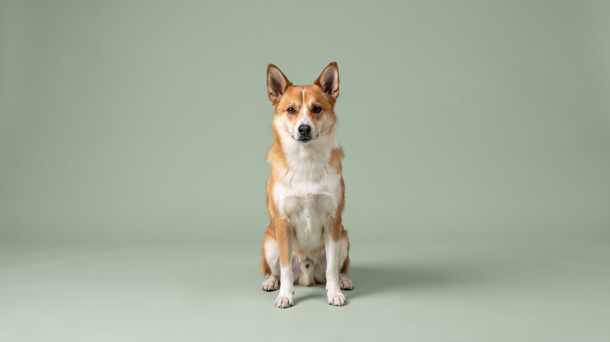

У норвежского лундехунда шесть пальцев на каждой лапе, он запрокидывает голову до уровня спины и складывает уши так плотно, что закрывает слуховой проход. Всё это не причуды и не мутации. Порода выведена для конкретной задачи: охоты на тупиков в узких расщелинах отвесных скал Норвегии. Лундехунд малоизвестен, немногочислен и по-настоящему уникален, вот что нужно знать, если вы думаете завести такую собаку.
🐾 У вас норвежский лундехунд?
AnimaLife соберёт уход под породу: к каким болезням есть склонность, что проверять по возрасту, чем кормить и когда пора к врачу. Бесплатно, прямо в мессенджере.
Собрать план ухода → Собрать в MAX →
У вас iPhone? AnimaLife есть в App Store
Шесть пальцев на каждой лапе закреплены в стандарте породы FCI. Лишний палец добавляет сцепление на скользком камне и мокрых уступах норвежских фьордов, по которым собака лазила за тупиками.
Три другие особенности анатомии тоже рабочие:
Такого набора нет ни у одной другой породы.
Норвежский лундехунд независимый, энергичный и любознательный. Он привязывается к семье, но на посторонних реагирует осторожно: это норма для породы, работавшей в одиночку на скалах без хозяина рядом. Принуждение и грубость работают плохо, лундехунд уходит в себя или игнорирует команды. Позитивное подкрепление и короткие сессии дают результат.
Порода не бойцовская и не охранная. С детьми уживается хорошо при ранней социализации. С другими собаками обычно нейтрален. Охотничий инстинкт к мелким животным присутствует, но выражен умеренно.
Лундехунд не нуждается в марафонских прогулках, но скучать не любит. Достаточно двух прогулок в день по 30–45 минут с возможностью побегать и обнюхаться. Ноузворк и игры с поиском предмета подходят хорошо: порода работала именно носом.
Одиночество переносит терпимо, но без занятости тоскует. Игрушки, кормушки-головоломки, дрессировка короткими сессиями помогают занять его в отсутствие хозяев.
У лундехундов чувствительный желудочно-кишечный тракт. Это особенность породы, связанная с изолированным разведением на норвежских островах. Пищеварение у них устроено иначе, чем у большинства собак: усвоение питательных веществ может быть сниженным.
Рацион обязательно обсудите с ветеринаром до покупки щенка. Высококачественные корма с хорошей усвояемостью, небольшие порции несколько раз в день и внимательное наблюдение за состоянием: таков базовый подход для этой породы. Самостоятельно менять кормление без рекомендации врача не стоит.
Порода редкая: в мире насчитывается около 1500–2000 лундехундов. Найти добросовестного заводчика непросто, а щенков в России почти нет. Лундехунд подходит тем, кто:
Если хочется собаку, которая выполняет команды безоговорочно и не требует специального рациона, лундехунд не лучший выбор.
🐾 Ваш питомец — норвежский лундехунд?
Заведите профиль в AnimaLife: приложение запомнит породу, возраст и вес и будет подсказывать по уходу именно для неё. Вопросы AI-ветеринару — круглосуточно и бесплатно.
Завести профиль → Завести в MAX →
У вас iPhone? AnimaLife есть в App Store
🐾 Понравился разбор?
Подпишитесь на канал — каждый день разбираем по одному тревожному симптому у кошек и собак: что в пределах нормы, а когда пора к врачу. Подпишитесь, чтобы не пропустить разбор, который может спасти здоровье вашего питомца.
Материал носит информационный характер и не заменяет очную консультацию ветеринара.